SAGANO BLOG
- >
- SAGANO BLOG
- >
- 国際交流
2025年03月04日
こちらの記事の続きです。
韓国の全南科学高等学校の生徒と交流したクラスの国際交流委員が、その様子をまとめてくれました。

『お互いの研究を発表し、意見を深め合いました。ワックスワームという蜂の巣を消化できる虫がプラスチックをも消化できるという研究結果がとても興味深かったです。プラスチックは微生物の力では分解できないので、もしワックスワームがプラスチックを消化でき、それによるワックスワームへの害がないのであれば、プラスチックの環境問題の解決につながるのではないかと思いました。』
『科学について英語で交流するのはかなり難しかったですが、それでも事前にある程度知識を入れておけば何とかやり取りできると感じました。だから、科学の分野を英語で交流する際でも難しいから無理と決めつけず、積極的に学んでいこうと思いました。』

『私たちのグループは福笑いをしました。初めてやったのにも関わらず、みんなとても上手でびっくりしました。みんな積極的にゲームに参加してくれて嬉しかったし、もっと私たちからも積極的に相手のことを知ろうとすることが大切だと思いました。』
『嵯峨野高校について質問をしてくれたり、韓国の学校のことを教えてくれたりと積極的に話してもらえたので、私たちも話しやすく、話の流れの中で質問ができたと思います。互いに話しやすい雰囲気を自分から作れるようにしたいです。』

『一緒にランチを食べました。話している中で驚いたのが、トリリンガルの生徒がいたことです。韓国語はもちろん、英語、日本語までペラペラで、私もいつかこんなふうに複数の言語で色々な人と話せたらいいなと思いました。また、天文クラブに入っている人もいて、望遠鏡を使って撮った星の写真を見せてくれました。とても幻想的で綺麗でした。勉強や自分の好きなことを続ければ、コミュニケーションの幅が広がることを学びました。』

『ご飯を食べて、お互いに好きな歌手や曲を質問しあったり好きなものについて話しました。印象に残ってるのは米津玄師が好きだと言っていたことです。日本の歌手を知っていると知り、親近感が湧きました。今回の交流で楽しく会話をしながら韓国の方の趣味や好きな曲、学校で何をするのかなどを話せてとても楽しい機会となりました。』
『喋りながらお昼ご飯を食べました。その中で最も驚いたことは、全南科学高校にはカラオケがあるということです。日本と韓国の高校の違いについてわかって面白かったです。』
2025年02月25日
2月13日（木）、韓国の全南科学高等学校から生徒14名と教員11名が来校し、本校生徒と交流しました。全南科学高は、韓国において科学に特化した教育を行う高校で、卒業生の多数が韓国科学技術院（KAIST）等の名門大学に進学するトップ高の１つです。
１限は、２年専修コースの生徒と探究成果の発表を通じた交流を行いました。嵯峨野高、全南高からそれぞれ２件ずつ、英語によるプレゼンテーションと活発な質疑応答が交わされました。


２限は、１年８組の生徒とともに、プラネタリウムを用いた授業を体験しました。
３限は、２年専修コースのスーパーサイエンスラボⅡ（SSLⅡ）を自由に見学し、研究に関する質疑応答や議論による交流を行いました。


４限は１年１組のグローバルインタラクション（GI）の授業において、日本の伝統的な遊びを体験するなど、ともに楽しみました。


昼休みには、本校校長による Welcome Ceremony 後、２年生の国際交流委員とランチを食べながら歓談しました。
午前中だけの短い時間でしたが、大変楽しんでもらい、教員の方にも「感動した！（"Impressive !"）」とのコメントをいただくことができました。今後も交流が続くことを楽しみにしております。


2025年02月12日
2月5日(水)、GIの授業で京都の大学に通う留学生10名を招いて、1年生1～6組の生徒がインタビュー活動を行いました。参加クラスの国際交流委員がその様子をまとめてくれました。

『台湾出身の京大生の方と話しました。良い国際的な人間になるために活かせそうなことについて質問しました。いろんな国について知ることが共生の第一歩になる、だからその国や地域に詳しくなるために現地ガイドをしているのだとおっしゃっていたのが印象深かったです。相手を知ろうとし、受け入れることが大切だと分かりました。』
『私は今回、ALTの先生と、現在京都大学に通っているベネズエラ出身の留学生にインタビューをしました。インタビューをする中で驚いたことは、「あなたにとって大切な一語は何か」という質問をしたときに、2人ともが "Love" を選んでいたことです。他の人や物事を愛して、理解しようとすることで、もっと幸せで平和な人生を生きることができると思うからだそうです。私はこのインタビューを通して、国際社会でいろんな人たちと接するにあたって、自分と違う意見を認め、理解しようとすることの大切さが学べました。』
『ウクライナから立命館大学に留学されている女性と、台湾から京都大学経済学部に留学されている男性が2人とも口を揃えて「日本のものはきれいで清潔だ」と言ってくれました。他の国だと電車も時間通りに来ないようなので、カルチャーショックを感じたとともに、自分たちは恵まれているな、とも感じました。この機会を通して、a good global citizenに一歩近づけたように思います。彼らから学んだことが、少しでもこれからの私の未来に活きるようにしたいです。』
『印象に残っているのはとても小さい頃から持っている夢を今も追いかけ続けて大学でもそれを専攻し将来の目標を叶えるために頑張っているという話を聞けたことです。その姿を見て自分も頑張ろうと思えたし、子供の頃の夢を叶えようと頑張っているのはすごいと思いました。』

2025年01月08日
12月17日(火)、韓国の全羅南道から約20名の訪問があり、１年３,４,６組の生徒がGI(グローバルインタラクション)の授業で交流しました。参加クラスの国際交流委員がその様子をまとめてくれました。
『私たちは日本のアニメについて紹介するプレゼンをしました。韓国の高校生がアニメをよく知っていて、私が知らない日本のアニメも見ていて驚きました。また韓国で有名なお菓子をプレゼントしてくれました。日本にも似ているものがあったので韓国との新しい繋がりを見つけることができたように感じて嬉しかったです。』


『日本のおすすめなお菓子の話をして盛り上がりました。画像を見せながら行ったのでお互いにわかりやすく、話しやすかったです。リアクションがとても大事だと実感しました。』
『日本の伝統的な遊びをしたり雑談したりしました。その中で"だるまさんがころんだ"と"いっせーのーで"をしたのですが、韓国にも同じような遊びがあるそうです。とても驚いたと同時に、繋がりを感じてなんだか嬉しい気持ちになりました。伝統文化が、地域の人だけでなく国境を越えて人を結んでくれることもあるんだと学びました。』
2024年11月28日
11月20日(水)韓国のコクソン高校の生徒と本校の国際交流委員10名がオンラインミーティングで交流しました。今年度のコクソン高校との交流は今回が最終回です。参加生徒たちがその様子をまとめてくれました。


『コクソン高校の生徒が、自分たちが行っている環境を良くするための取り組みについてプレゼンをしてくれました。コクソン高校では、自分たちで野菜を育て、それを自分たちで調理して食べ、オーガニックフードについて考えを深める取り組みや、ゴミを拾う活動があるそうです。カヌーを使って川に浮いているゴミまでも拾ったりしていて、とてもびっくりしました。自分の周りでも、このような環境を良くする取り組みをもっと増やしていけたらなと思いました。』
『Ploggingという、ジョギングしながらゴミを拾う取り組みについて学ぶことができました。環境へ配慮することの大切さに気づけたので、これからは私も日常の中で少しずつ変えていけるところを見つけようと思います。』

『日本、京都、嵯峨野高校に関するクイズを出しました。そこからお互いの学校のことについて質問しあったりしてとても楽しかったです。』
『コクソン高校の生徒はみんな食堂でご飯を食べると聞いて、日本とは違うことに驚きました。もっとお互いのことを知るために話したいと思いました。』
『一度勇気を出して発言してみると、その後は自信を持って話せました。』
『オンラインなので距離がある分、反応したりしてくれるととても嬉しかったので、リアクションの大切さを学びました。』
2024年11月26日
11月19日(水)、韓国の珍島高校から約80名の訪問があり、１年１～６組の生徒がGI(グローバルインタラクション)の授業で交流しました。参加クラスの国際交流委員がその様子をまとめてくれました。


『私たちは学校案内を行いました。嵯峨野高校の茶室、運動場、体育館、食堂を見て回りました。話している中で韓国の学校での体育祭や授業の様子を教えてもらい、私たちも学校生活について伝えることができたと思います。また、韓国でおすすめのご飯も教えてもらったので韓国に行ってみたいと思いました。』


『私は韓国語を勉強しているのでそれを活かせて嬉しかったです。韓国の学生にも日本語を勉強をしている人がいて、お互いに教え合えたのが良かったです。とにかく話してみることが大切だとわかったし、意外に伝わるものだと感じました。』


『和食についてのプレゼンをしました。和食をすでに知っていてとてもびっくりしました。韓国の食べ物についてのプレゼンや、クイズもしてくれてとても楽しかったです。』
『韓国についてのクイズや韓国のお菓子などを用意してくれていて、楽しい時間を過ごすことができました。今度は、もう少し日本のことを知ってもらうためにクイズなどを考えておきたいと思いました。』


『いっせーのーでゲームと韓国の遊びのAPTゲームをしました。韓国の人にもいっせーのーでゲームが通じて驚きました。日本の遊びだと思っていたので通じて嬉しかったです。また、APTはどんなゲームなのか気になっていたので実際に遊べて嬉しかったです。』
『私の班は、百人一首を持ってきて坊主めくりをしました。ルールを英語で説明するのが難しかったのですが、ジェスチャーなどを使いながら、終始楽しく活動できました。集合写真を撮って解散した後も、たくさん話しかけてくれて何度も写真を撮りました。とてもいい思い出になりました。』


2024年11月25日
11月14日(木)、シンガポールのYishun Town Secondary Schoolから31名の訪問があり、１年１,２,５組、２年１,４,５,６組の生徒が英語の授業で交流しました。また、国際交流委員の有志生徒がランチミーティングで交流しました。参加生徒がその様子をまとめてくれました。


『ジオゲッサー（地図を使ったゲーム）をしました。国や言語を超えて協力ができることを実感できました。』


『スクールツアーをしながら学校生活などについて話しました。シンガポールの学生が日本語をとても上手に話していたことに驚きました。シンガポールと日本は学校の様子が似ていて、そこがすごく面白いなと思いました。私もシンガポールの公用語の一つであるマレー語などを勉強したいと思いました。』


『英語でディベートをしました。意見を交換しながらディベートの準備をしたことがとても楽しかったです。コミュニケーションをとる上で、英語の正確さだけではなく、ジェスチャーなどをしながら伝えようとする気持ちを持つことが意思疎通をするために一番重要なことであると交流を通して実感することが出来ました。』
『英語を聞き取れないことも多かったのですが、聞き返すとゆっくり発音したり、違う言葉を使ったりなど工夫してくれるのでわからなかった時は遠慮なく聞くことが大切だと思いました。』


『シンガポールのおすすめの場所を聞くと、ビーチと答えた人が二人もいたので、シンガポールに行く機会があれば、ぜひ行ってみたいと思いました。』
『シンガポールの学校では、色々な国の料理を売っている店があり、そこで食べるという話が印象的でした。私は毎日お弁当を食べるということを伝えるととても驚いているようでした。また一度も海外に行ったことがない私にぜひ、シンガポールに来てと言ってくれました。いつか訪れて美味しいご飯を食べたいと思いました。』


『ランチミーティングでは、シンガポールの生徒と話しながら、昼食をとりました。相手のお弁当が日本食で、煮物だったりを初めて見たらしく、一つ一つこれはなに？と興味をもってくれて、食べるとどれも美味しいって言ってくれているのが印象的でした。自分から積極的に話しかける力が一層ついたと思い参加して良かったと思いました。』

『会話の中で最も興味深かったことは、シンガポールでは、チリクラブやホッケンミーが有名な料理だと言うことです。どれも美味しそうで食べてみたいと思いました。画像検索して料理の写真も見せてくれたり、積極的にシンガポールについて教えてくれて嬉しかったです。相手の国の文化や食について気になることがある時は、迷わず聞くことが大切だと感じました。』

『シンガポールの人口のほとんどを中国系の人が占めていると知ってびっくりしました。また、新年を祝う行事にお年玉を渡すところや、クリスマスにイルミネーションが点くところなど日本に似ている点があるけれど、私たちが知らないイベントも多くあることを知りました。』


『貿易ゲームをしました。グループによって元から与えられている条件が違って、有利なチームはあまり不利なチームに協力的ではなかった様子が、発展途上国と先進国との関係を表しているようでした。その格差が顕著なことをまのあたりにし、世界の不公平さを知るいい機会になりました。』
『拙い英語ながらも自分の考えを伝えて話し合うことができました。シンガポールの方たちはゲームに真剣ですごく白熱していたことが印象に残っています。会話をする中でもっとスムーズに考え伝えたいと感じる場面が多くあったので日常的に英語を話す機会を増やしたいと思いました。』


2024年11月19日
こちらの記事の続編です。

『ランチミーティングに参加しました。最初はとても緊張しましたが、お互いの学校の授業や科目について話せたのがとても楽しかったです。わからなかった単語は恥ずかしがらずに聞き返して理解することが大切だと思いました。』
『シンガポールでの過ごし方や行ったことある国、趣味などについて話しました。一番印象に残っているのは、ドリアンをよく食べるという話を聞いたことで、通りに生っている果物の実などを自由に取って食べれるというのも面白いと思いました。今回の交流で、日本にはないシンガポール特有の文化など知らないことがたくさんあり多くのことを学べました。』
『弁当の中に入っていたものから好きな食べ物の話につながったり、学校の部活の話になったりして楽しい時間を過ごせました。』


『英語で会話するのに緊張していましたが、相手側から質問してくれたり、日本の感想を言ってくれたりして緊張がほぐれ、こちら側からもたくさん話しかけることができました。シンガポールは一年中暑いから日本の涼しい気候が居心地が良くシンガポールに帰りたくないと言ってくれて嬉しく感じました。今回のランチミーティングでは他国の人と英語を通して交流する楽しさを感じることができました。英語力をあげて、もっと会話できるように英語を勉強するモチベーションにもつながりました。』
『電車の中ではもの食べてはいけないという日本にはないシンガポールの法律のことや、シンガポールには英語、タミル語、マレー語、中国語の4つの公用語があることなど、お互いの国のことについて話し、興味深かったです。また、お互いの国のおすすめの料理についても話しました。シンガポールではチキンライスが美味しいと聞いたので、シンガポールに行く機会があれば、チキンライスを絶対食べようと決めました。』


『ボールを遠くに飛ばす機械を一緒に作り、どのチームが最も遠くに飛ばせるか対決を行いました。お互いにどうすればいいかわからない中で、会話が英語だったので最初はうまく噛み合いませんでしたが、何度も会話してみることで意志疎通できるようになっていきました。また、初めて対面で海外の生徒と話すことができ、いい機会になりました。』

『日本の有名な科学者や数学者についてのポスターで発表をし、シンガポールの伝統的な遊びにつての紹介をしてもらいました。私が紹介した宇宙飛行士について、もっと詳しい内容を求められたりととても知的好奇心が旺盛だなと思いました。直接英語で交流するのはほとんど初めてで不安でしたが、いざやってみると案外コミュニケーションが取れたので、交流したいという意思があればなんとかなることがわかりました。』


『シンガポールからの学生と、「宇宙開発にお金をかけるのをやめて、環境保全にお金をかけた方が良い」という論題でディベートをしました。実際にディベートをする際はもちろん、どのような意見を出すか決める際も全て英語で話さなければならなかったので苦労しましたが、その分伝わった時の感動は大きかったです。「どうせ伝わらない」と最初から諦めるのではなく、なんとか伝えようとする意思を持つことが大切だなと思いました。』
『相手の高校生も交えて、ディベートを行いました。相手の生徒さんが、議論や質問などに対してすごく活発で、積極性にとても驚きました。私たちが、きちんと理解できていなさそうな雰囲気だと、言い方を変えて伝えてくれたりしたので、こちらも話しやすく、とても楽しい時間を過ごせました。英語を使って、話したり、聞いたりすると、語彙の使い方などもわかってくるので、実際に使ってみることが、面白く、大切だと思いました。』


2024年11月19日
11月11日(月)、シンガポールのChung Cheng高校から16名の訪問があり、１年３,４,６組、２年２,３,７,８組の生徒が英語の授業で交流しました。また、国際交流委員の有志生徒がランチミーティングで交流しました。参加生徒がその様子をまとめてくれました。


『私たちは日本のアニメについてたくさん話しました。シンガポールから来た友達も私が見ているアニメを見ていてすごく嬉しかったです。中には日本語を勉強している子もいて、日本語を話してくれるのを見て驚きました。私ももっと英語を勉強してアニメの良さをいっぱい話せるようになりたいと思いました。』


『私のクラスは日本の伝統的な遊びをし、私の班は坊主めくりをしました。シンガポールの学生もルールを理解して、一緒に遊んでくれたのが印象的でした。この体験を通して、英語でコミュニケーションをとるのは難しいけれど、自分たちが楽しんでいたら、シンガポールの人も楽しんでくれると学びました。』


『私たちは小グループに分かれ、学校を案内しました。ツアーではグラウンドや体育館、図書室などを案内しました。実験室や食堂など、いろんな施設に興味を持ってくれて嬉しかったです。お互いの文化や日常生活について話すことができ、とてもいい経験でした。』


『私たちはみんなで協力して謎解きゲームをしました。初めはヒントが書かれている英文を見ても意味がまったくわかりませんでした。それでも、みんなで考え続け、最終的に意味がわかった時にはみんなで大喜びしました。英語でコミュニケーションをとって協力するのはとても難しいことだけれど、必ず分かり合うことができるということを学びました。』
2024年11月11日
11月6日(水)1年5組の生徒がGI（グローバルインタラクション）の授業内で、トルコのTÜBİTAK高校とオンラインミーティングで交流しました。該当クラスの国際交流委員がその様子をまとめてくれました。
『それぞれの国についてスライドを使って発表を行いました。その発表の後に、トルコの高校生が「これは何ですか？」と白くて丸いものを見せてくれました。食べ物のようで、伸びていたので、「それは餅だと思います。」と伝えると嬉しそうに食べていたのが印象的でした。その後で餅を使った料理にはどんなものがあるのかも話しました。この交流を通して私は、たとえ国が離れていても、言語が違っていても、たわいのない会話で盛り上がることができるということを知りました。トルコについてはほとんど何も知りませんでしたが、この交流を機に勉強してみようと思いました。』
『他の国の価値観や文化を知れただけでなく、日本の文化も他の国に広がっていっているということを学びました。』
2024年11月06日
10月28日(月)2年7・8組の生徒がSE（サイエンスイングリッシュ）の授業内で、考古学者のDr. Noxonを招きVR技術についての特別講義を受けました。該当クラスの国際交流委員がその様子をまとめてくれました。
『3D画像の作り方を学びました。色々な角度から何枚もの再現したい物体の写真をとってそれを元に3Dの画像が作られるのですが、大量の平面の写真がアプリで立体になるのが不思議で感動しました。考古学の世界で遺跡の再現や研究にこの技術が利用されていると知って自身のラボ活動でも利用できるかもしれないなと感じました。』

『3Dスキャンを実際に使用してみて、想像より早く簡単に3Dスキャンができることに驚いた。また、海外出身の先生が縄文時代について興味を持たれて、研究されていることも知ることができた。』
2024年11月06日
10月28日(月)1年3組の生徒がGI（グローバルインタラクション）の授業内で、韓国のHaesung International Convention High Schoolの生徒とオンラインミーティングで交流しました。該当クラスの国際交流委員がその様子をまとめてくれました。
『韓国の生徒たちとお互いの文化を紹介し合いました。中には日本語を学習している人もいて、ジブリ映画やちいかわの話で盛り上がることができたので楽しかったです！他の国の文化を知ることはとても面白いなと思いました。』
『私のグループでは、お互いの自己紹介の後、韓国の生徒から学校での一日の流れについて発表してもらいました。つづいて私たちのグループは日本の昔話について話しました。今回の交流で韓国の学校での過ごし方や韓国の文化などいろんなことが学べました。桃太郎を知っていたり日本の歌手や文化についても知ってくれていることが多く、嬉しかったです。』
2024年10月02日
9月25日(水)韓国のコクソン高校の生徒と本校の国際交流委員12名がオンラインミーティングで交流しました。今年度３回目となる今回は、嵯峨野の生徒が "Sustainable Actions for Maintaining My City Ecologically"というトピックでプレゼンテーションを行いました。参加生徒たちがその様子をまとめてくれました。
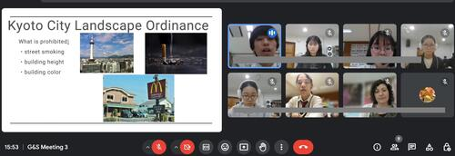
『京都で行われている環境にやさしい活動について韓国の高校生に英語で発表しました。京都に訪れた経験のある方と話が盛り上がって時間いっぱいまで話せたのが嬉しかったです。沈黙の時間ができてしまった時に思い切って話題を提案できたことが少しだけ自分自身に対する自信につながりました。』
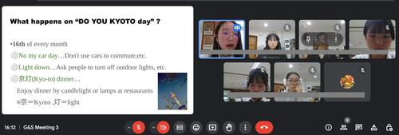
『正しい文法でなくてもいいからとにかく積極的に会話を楽しむことが大切だと学びました。』
『プレゼンテーションをして、質問にも答えられたので、意思疎通ができていると感じ、とても嬉しかったです。』
『英語が流暢に話せるようになるには、英語を話す経験を重ねて行くことが大切だと感じた。これからの交流にも積極的に参加していこうと思う。』
『自分の英語が伝わらなかった時に、スライドやいろんな言い方を使って、伝わったのがすごく嬉しかったし、英語のおもしろさを感じました。英語は難しいけど、伝える努力をすることや、自分で話せるように先を見据えながら勉強していきたいと思いました。』
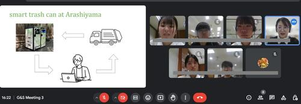
『長岡京市にあるクリーンプラザ乙訓のエコな取り組みについてスライドを作り発表しました。自分が発表するときに、頷いてくれたり、質問したら返事をくれたり、終わったあとに拍手してくれたりして、自分の話していることが、韓国の生徒達に届いていると実感でき、面白く感じました。思っていたより、話が盛り上がったため、勇気を持って話してみることが大切だと思いました。』
『前回コクソン高校の発表を聞いた時の内容と京都の政策は全然違うことを学びました。その国々や地域によってそれぞれの工夫がされていると分かりました。』
2024年08月26日
2024年8月4日から9日まで、本校生徒が韓国全羅南道州の麗水市にある全羅南道州教育庁国際教育院に滞在し、日韓高校生グローバル公民権プロジェクトのサマーキャンプに参加しました。国際教育院は多文化教育に特化した教育施設であり、国内外から教員や児童生徒が集まり研修を行います。
このプロジェクトはオンラインで月に1回程度実施されており、サマーキャンプはそのプログラムの一環として対面で実施されたものです。参加したのは、全羅南道州にある高校の生徒、日本からは嵯峨野高校他3校の生徒総勢約40名でした。プログラムの内容はグローバル課題に関するもので、国際教育院所属の教員によって開発されており、生徒同士のやりとりも含めプログラムは全て英語で実施されました。また全生徒が国際教育院の寮に滞在し生活を共にしました。生徒は講座や寮での生活を通じて、英語でのコミュニケーションやグローバルリーダーとしての素養を育むことができました。12月には今回の研修に参加した韓国の生徒が嵯峨野高校を訪問する予定です。


以下では簡単に研修内容について紹介します。
8月4日 出国日
1時間程度のフライトの後、釜山空港に到着しました。そこからバスで2時間30分移動したところにある全羅南道国際教育院に向かいました。施設内には世界の衣食住の文化を紹介する多文化共生教育ならではのコーナーがありました。地元の食堂で夕食を済ませた後、寮に戻りました。
8月5日～8月9日 日韓高校生グローバル公民権プロジェクトサマーキャンプ
8月5日の午前中は開会式とアイスブレイクを行いました。その中で、生徒は研修を共にするグループとバディを決め、緊張した面持ちで自己紹介を行っていました。8月5日の午後以降はグローバルリーダーシップの育成を目指す様々な講座、文化施設や商業施設を訪れるフィールドワーク、生徒間の交流を深めるイベント等が実施されました。以下ではその中からいくつかをご紹介します。
Global Food Culture
この講座では、世界の食文化や我々が普段から慣れ親しんでいる食材のルーツについて学びました。その後、生徒には世界各国の食材を使用した新しい麺料理を考え、実際にそれを作るという課題が与えられました。どのような料理を作るかスムーズに決められないグループや、料理が決まっても調理過程で上手くコミュニケーションができず、作業が進まないグループもありました。しかし間違いを恐れず積極的に意見を伝えようとしたり、指示を出そうとしたりする姿を見せる生徒もいました。即興で料理を考えて、それを作ることは生徒にとって難しい課題でしたが、難しいからこそ生徒には積極的な意見交換や協働することが求められました。この講座では食文化だけでなく、異文化の人々との協働とその難しさについても学べたようでした。

フィールドワーク: 順天湾ガーデン
フィールドワークの1つとして順天湾ガーデンを訪れました。順天湾ガーデンは2023年に国際庭園博覧会が開催されており、博覧会以降も多くの観光客が訪れるスポットになっています。生徒はグループで世界各地の美しく整備された庭園、湖、丘、そして何千本もの花や木々を鑑賞していました。
Talent Show Prep & Talent Show
講座に加え、生徒間の交流と異文化理解を深める活動も実施されました。この活動では、10人程度のグループに分かれてＫポップダンスを一緒に練習し、その踊りを披露しました。韓国の生徒が提案してくれた曲の一つに日本のとても有名なアニメの主題歌がありました。韓国における日本のアニメ文化の認知度の高さを知る一場面でした。生徒は意思疎通が上手くできない時も、互いの国の文化をきっかけに話が盛り上がったり、関係性を深めたりしていました。研修を通じて、国を超えて人を繋ぐ文化の偉大さをどの生徒も身を持って理解できたと思います。


Closing & Farewell Ceremony
閉会式では、講師から一人ひとりに修了証書が渡されました。「この閉会式は関係性の終わりではなく、将来続いていく友情の始まりです。この機会に感謝し、関係性を続けていってください」との言葉があり、多くの生徒は大きく頷きながら聞いていました。また自ら手を挙げ、みんなの前で涙ながらに感謝を伝える生徒や感謝の思いを書いた手紙を渡す生徒の姿を見て、今回の研修が生徒にとって非常に有意義であったかが伝わってきました。

8月9日〜8月10日 フィールドワーク：釜山・帰国日
国際教育院での閉会式を終え、空港がある釜山に移動しました。釜山ではナマク高校の生徒と合流し、釜山の市場や観光スポットを案内してもらいました。のどかなリゾート地であるヨス市とは異なり、巨大なビルや商業施設が立ち並ぶ釜山を生徒たちは楽しんでいました。

最後に
研修が進むにつれて、生徒は英語だけでなく、現地の高校生から韓国語も積極的に学び、使おうとするようになりました。また帰国の際にも、「もっと英語・韓国語を学びたい」と話していました。湧きあがる感情や思いを、機械翻訳ではなく、自分の言葉で目の前の人に伝えたいと感じたのだと思います。これは対面での国際交流だからこその学びであり、現地に赴き、直接人と触れ合うことの尊さを実感したようでした。
このサマーキャンプを通して生徒たちは貴重な学びと成長の機会を得ることができました。参加した生徒たちがグローバルリーダーとして、社会で活躍してくれることを期待しています。様々なご支援・ご協力を本当にありがとうございました。


{kind=link}
{kind=link}
{kind=link}
{kind=link}
{kind=link}
{kind=link}
{kind=link}
{kind=link}
{kind=link}
{kind=link}
{kind=link}
{kind=link}
{kind=link}
{kind=link}
{kind=link}
{kind=link}
{kind=link}
{kind=link}
{kind=link}
{kind=link}
{kind=link}
{kind=link}
{kind=link}
{kind=link}
{kind=link}
{kind=link}
{kind=link}
{kind=link}
{kind=link}
2024年07月13日
7月6日土曜日に、サマースクールの一環で the 2024 English Immersion Day (英語漬けになる1日）を開催しました。AETの先生方が準備してくださった個性豊かな企画にのり、意欲のある1年生17人が楽しみながらどっぷり英語漬けになりました！
On Saturday, July 6th, six AETs came to Sagano High School to hold the 2024 English Immersion Day, an event designed to let the students have fun and express themselves in an immersive, all English environment.

After a brief opening speech, the students broke into small groups to attend various classes and workshops taught by the AETs, with activities ranging from role playing to storytelling, the students were able to use their English language skills for unique and expressive conversation.

In the afternoon, the students broke into teams and participated in improv comedy workshops, acting out in different games and situations, entirely in English! After some rehearsal, the teams all came together to perform for each other and the AETs, who formed a panel of judges. All the students received prizes from the AETs for their hard work and performances!

This year's Sagano English Immersion Day was a wonderful experience for the students! They had an amazing time and made great use of their English language skills!

2024年06月14日
6月7日、１年１,２,５組の生徒がGI（グローバルインタラクション）の授業で、アメリカのJunipero Serra High Schoolと Notre Dame High School Belmontの生徒と交流しました。参加したクラスの国際交流委員がその様子をまとめてくれました。
{kind=link}
{kind=link}
{kind=link}
『嵯峨野高校の校舎案内をしました。実験室の説明などをしながら会話が弾みました。特に楽しかったのは、図書館で和食の本を見ながら交流をしたことです。アメリカの話も沢山聞けて良かったです。日本のことについてももっと学びたいと思いました。』
{kind=link}
『私の班は英語版かるたを紹介しました。魚の絵を見て、好きな寿司ネタを尋ねると「ほぼ全部好き」とのことだったので、日本文化の人気の高さがわかりました。今度は日本語のかるたも紹介して一緒に遊んでみたいです。これをきっかけに私もアメリカの伝統文化やポップカルチャーについて調べてみたいと思います。』
『日本の祭りについて紹介しました。一番印象に残ったことは、はっぴを着てもらって皆さんがとても喜んでくださったことです。またぜひ交流したいです。』
2024年05月31日
5月21日(火)火曜日、韓国のコクソン高校からおよそ80名の来校があり、1年生１～６組の生徒がGI（グローバルインタラクション）の授業で交流しました。その様子を参加クラスの国際交流委員がまとめてくれました。
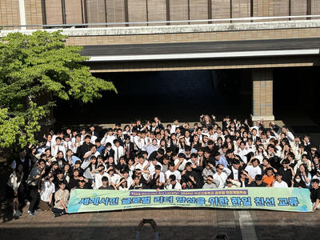 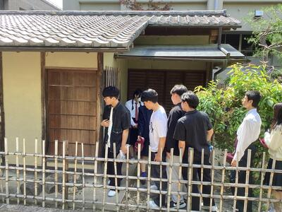
『私は学校の案内をしました。韓国の高校生が制服や食堂にとても驚いていたのが興味深かったです。その時にコクソン高校では売店で昼食を無料で食べられることなどを教えてもらい、文化の違いを実感しました。』
{kind=link}
{kind=link}
『驚いたのは、体育館にはいったとき、みんなのテンションが上がって「ハイキュー！」と言っていたことです。後から話してみると、韓国では、「ハイキュー‼︎」や「君の名は」など、日本のアニメが人気なのだとわかりました。』
『和室を案内しました。将棋部や華道部など様々な日本の伝統文化の部活が和室を使っていることを伝え、コクソン生が日本の文化に興味を持ってくれたので嬉しかったです。また、スクールツアー中にコクソン高校での放課後の過ごし方を聞いたりして、英語での会話が盛り上がったので楽しかったです。』
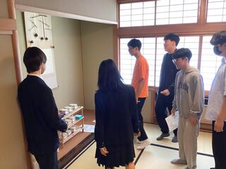 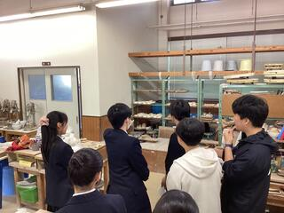
『私は着物や浴衣について紹介しました。お互い初対面だけど、韓国料理や漫画など、互いの国の文化について話せたのがおもしろかったです。』
{kind=link}
{kind=link}
『コクソン高校の生徒が唐揚げや梅干しなどの日本の食べ物を知っていることに驚きました。』
『私は和菓子を紹介しました。彼らもいくつか和菓子を知っていて好みについての意見を交換できたのが楽しかったです!』
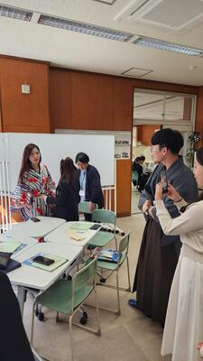 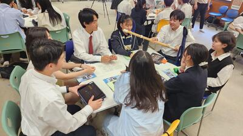
『私たちは竹とんぼや百人一首、双六などの日本の伝統的な遊びを紹介しました。このイベントを通して、私は英語で他国の人と交流する楽しさを学び、これからもどんどんこう言った機会があれば参加したいと思うようになりました。』
{kind=link}
{kind=link}
『私たちのグループは「だるまさんがころんだ」を紹介しました。私が驚いたのは、韓国にも似たような遊びがあるということです。国や言語が違っていても、遊びを通して仲良くなれるということを実際に体験することができて良かったです。』
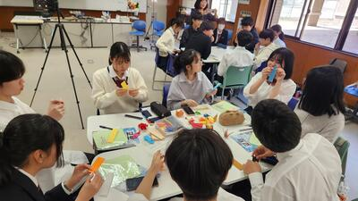 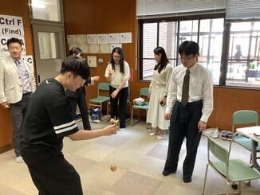
『英語に自信がなくても、積極的に会話を楽しもうとすることが何よりも大切だと学んだ。』
{kind=link}
{kind=link}
『外国語で外国の方とお話しするのは思っているよりも難しくて、もっともっと練習していかないといけないと感じました。また、英語だけでなく、韓国語にも挑戦してみたいなと思いました。』
『相手についてもっと知ろうとすることで、ぐっと距離が縮まって貴重な体験ができたと思います。』
『自国の文化も他国の文化も知り、互いに尊重していくことが大事だと思いました。』
『この交流をきっかけに互いの文化を知って自分の世界を広げられたらいいなと思います。』
{kind=link}
{kind=link}
2024年05月30日
5月20日(月)、2年8組の生徒がSE（サイエンスイングリッシュ）の授業でインドの Rukmini Devi public shool の生徒とオンラインで交流しました。参加したクラスの国際交流委員がその様子をまとめてくれました。
{kind=link}
『自己紹介の中でお互いの趣味について話した。ゲームを趣味にしている人が多かったのでゲームについての話で盛り上がった。交流した生徒たちの中では、日本のメーカの人気が高く、日本製品を持っている人も多かった。』
『自己紹介をしているときに、RUKMINI DEVIの生徒が、私たちの名前のイントネーションを何度も確認して、話を振る時も全体に投げかけるのではなく名前を呼んでから質問などをしていたので、コミュニケーションにおいて名前を大切にしてるのだなと感じた。』
『私たちのグループは「 International Partners of Sagano High school」についてスライドを用いて紹介した。とても興味深く聴いてくれ、たくさんの質問をしてくれた。』
{kind=link}
英語でまとめてくれた生徒もいました。
『We had an engaging online interaction with students from Rukmini Devi. During our conversation, we shared insights about our respective schools, including our SSL (Super Science Lab), classes, and various school events. I found it fascinating to discover that our academic curriculums were quite similar. Speaking with them in English was both interesting and enjoyable, making it a truly meaningful experience. I wish we had more time, so someday, I look forward to visiting each other's schools and talking in person.』

2024年05月22日
5月14日(火)、韓国のハンイル高校から約130名の訪問があり、2年1組～6組の生徒が交流しました。参加クラスの国際交流委員がその様子をまとめてくれました。
{kind=link}
{kind=link}
『まず初めに、嵯峨野高校のESS部がスライドで学校紹介をし、剣道部、バトントワリング部も発表を行いました。ハンイル高校からも学校紹介とテコンドーの発表がありました。』
『本場のテコンドーを初めて生で見ました。板割りは迫力があり、素晴らしかったです。』
 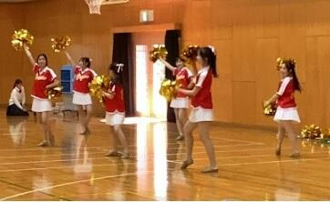
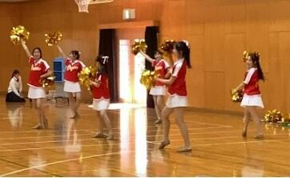
『発表の後は、ハンイル高校の生徒と嵯峨野生でグループを組み、英語を使って自己紹介をしたり、環境問題や自分の将来の夢などについて英語で話し合ったりしました。』
{kind=link}
『将来の夢についての話を韓国の学生から聞いたときに、専門的な研究をしたり、医者になりたいという人もいて、良い刺激を受けました。』
『ハンイル高校の学校生活について聞いた際、平日は午前1時くらいまで学校で勉強し、休日は10時間以上勉強するという、日本との勉強に対する意識の違いにびっくりした。』
{kind=link}
『京都のことを紹介した時に「それ知ってるよ！」と言ってくれた時は、日本に興味を持ってくれてるんだと感じ嬉しくなりました。』
『ハンイル高校はみんな寮生活しているとききました。』
『こちらから見ると、びっくりするようなことでも、相手から見ると普通だったり、その逆もあるので、相手の国の文化を知っていくことが大切だと思いました。』
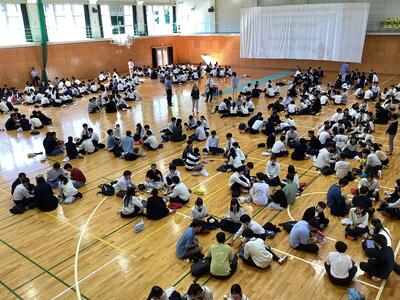
『お互い英語が母国語ではないこともあり、言葉だけでは伝わらないことも多くありましたが、写真を見せたりジェスチャーを使ったりして何とか言いたいことが伝わった時はとても嬉しかったです。』
{kind=link}
『英語を母国語としない国の高校生同士が英語で話せたことが貴重な体験だったと思います。伝えようとする姿勢が1番大切だと学ぶことが出来ました。』
『英語を学ぶモチベーションにつながりました。』
〒616-8226
京都市右京区常盤段ノ上町15番地
TEL 075-871-0723 FAX 075-871-0724
E-mail [email protected]
Copyright (C) 京都府立嵯峨野高等学校 All Rights Reserved.